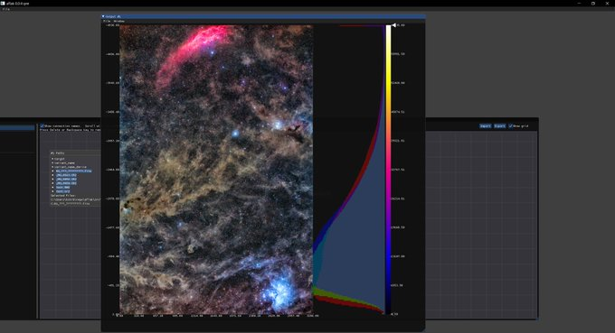
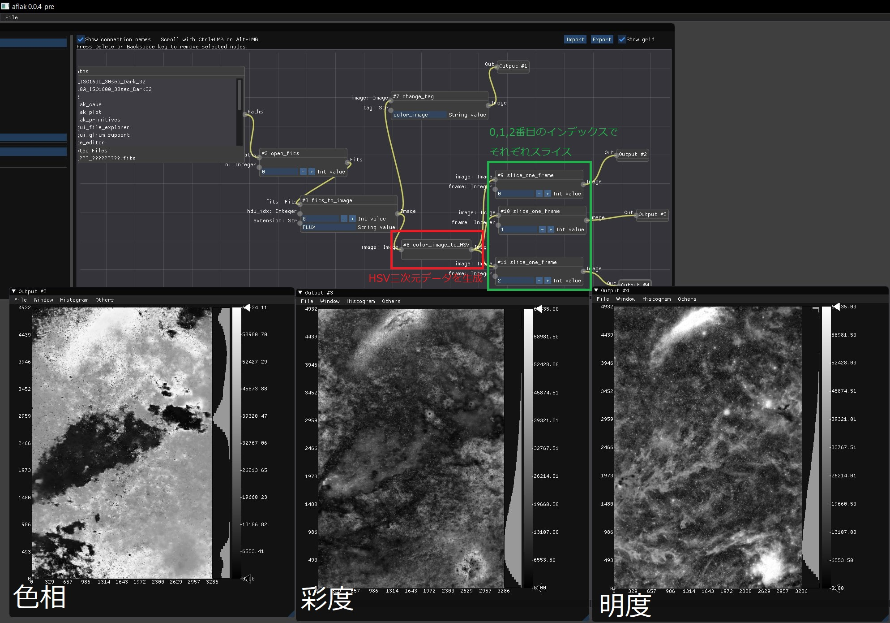
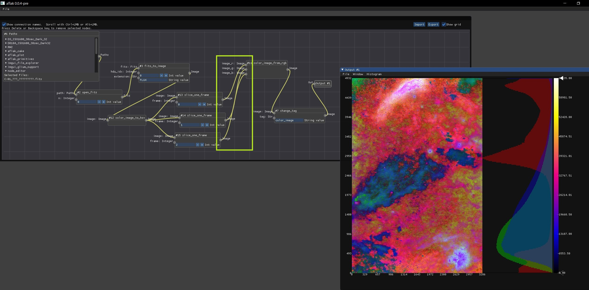
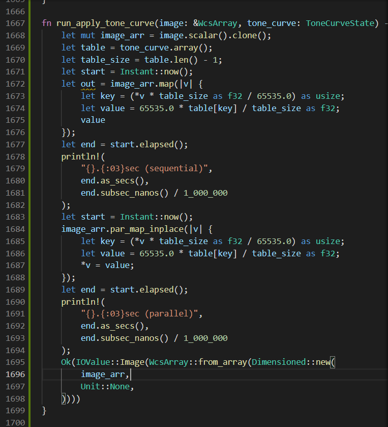
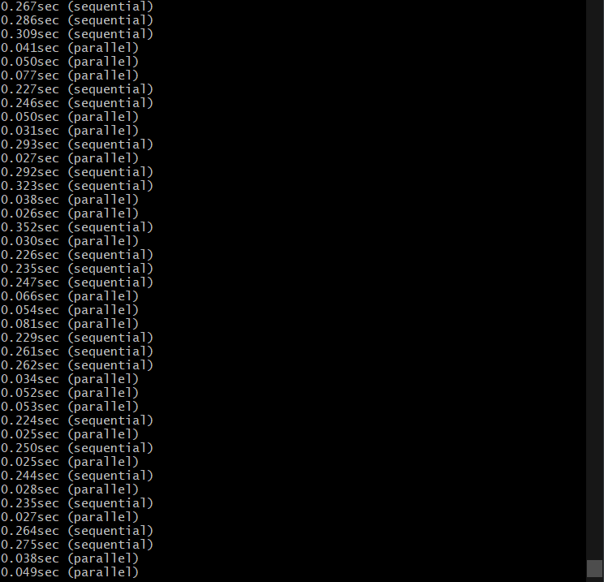

<!DOCTYPE html>
<html>

<head><meta name="generator" content="Hexo 3.8.0">
  <meta charset="utf-8">
  
    <title>
      
        自作プログラムで画像処理（カラーヒストグラム表示～トーンカーブ作成まで） | 
            ほしよみ大学生のブログ
    </title>
    <meta name="viewport" content="width=device-width">
    <meta name="description" content="はじめに今回も前回に引き続き自作プログラムでベーシックな画像処理まがいのことをしていきます．今回のお品書きはこちらです．  カラーヒストグラム表示 RGB→HSV変換とHSV→RGBのマッピング トーンカーブ機能の作成">
<meta name="keywords" content="Rust">
<meta property="og:type" content="article">
<meta property="og:title" content="自作プログラムで画像処理（カラーヒストグラム表示～トーンカーブ作成まで）">
<meta property="og:url" content="http://dabokun.github.io/2021/01/14/00000047-aflak-improc-02/index.html">
<meta property="og:site_name" content="ほしよみ大学生のブログ">
<meta property="og:description" content="はじめに今回も前回に引き続き自作プログラムでベーシックな画像処理まがいのことをしていきます．今回のお品書きはこちらです．  カラーヒストグラム表示 RGB→HSV変換とHSV→RGBのマッピング トーンカーブ機能の作成">
<meta property="og:locale" content="ja">
<meta property="og:image" content="http://dabokun.github.io/2021/01/14/00000047-aflak-improc-02/card.jpg">
<meta property="og:updated_time" content="2021-06-07T18:31:29.213Z">
<meta name="twitter:card" content="summary_large_image">
<meta name="twitter:title" content="自作プログラムで画像処理（カラーヒストグラム表示～トーンカーブ作成まで）">
<meta name="twitter:description" content="はじめに今回も前回に引き続き自作プログラムでベーシックな画像処理まがいのことをしていきます．今回のお品書きはこちらです．  カラーヒストグラム表示 RGB→HSV変換とHSV→RGBのマッピング トーンカーブ機能の作成">
<meta name="twitter:image" content="http://dabokun.github.io/2021/01/14/00000047-aflak-improc-02/card.jpg">
<meta name="twitter:creator" content="@astrodabo">
      
        <link rel="alternative" href="/atom.xml" title="ほしよみ大学生のブログ" type="application/atom+xml">
        
          
            <link rel="icon" href="/images/favicon.png">
            
              <link rel="stylesheet" href="/css/style.css">
                <!--[if lt IE 9]><script src="//html5shiv.googlecode.com/svn/trunk/html5.js"></script><![endif]-->
                
                  <script data-ad-client="ca-pub-1350688970555904" async src="https://pagead2.googlesyndication.com/pagead/js/adsbygoogle.js"></script>
</head></html>
<body>
  <div id="container">
    <div class="mobile-nav-panel">
	<i class="icon-reorder icon-large"></i>
</div>
<header id="header">
	<h1 class="blog-title">
		<a href="/">
			ほしよみ大学生のブログ
		</a>
	</h1>
	<nav class="nav">
		<ul>
			
				<li><a href="/">
						Home
					</a></li>
				
				<li><a href="/categories">
						Categories
					</a></li>
				
				<li><a href="/tags">
						Tags
					</a></li>
				
				<li><a href="/archives">
						Archives
					</a></li>
				
				<li><a href="/about">
						About
					</a></li>
				
				<li><a href="/work">
						Work
					</a></li>
				
					<li><a id="nav-search-btn" class="nav-icon" title="Search"></a></li>
					<li><a href="https://github.com/dabokun"></a>
					</li>
					<li><a href="https://twitter.com/astrodabo"></a></li>
					
						<li><a href="/atom.xml" id="nav-rss-link" class="nav-icon" title="RSS Feed"></a>
						</li>
						
		</ul>
	</nav>
	<div id="search-form-wrap">
		<form action="//google.com/search" method="get" accept-charset="UTF-8" class="search-form"><input type="search" name="q" class="search-form-input" placeholder="Search"><button type="submit" class="search-form-submit">&#xF002;</button><input type="hidden" name="sitesearch" value="http://dabokun.github.io"></form>
	</div>
</header>

    <div id="main">
      <article id="post-00000047-aflak-improc-02" class="post">
	<footer class="entry-meta-header">
		<span class="meta-elements date">
			<a href="/2021/01/14/00000047-aflak-improc-02/" class="article-date">
  <time datetime="2021-01-14T14:58:45.000Z" itemprop="datePublished">2021-01-14</time>
</a>
		</span>
		<span class="meta-elements author">astr0dab0</span>
		<div class="commentscount">
			
			<a href="http://dabokun.github.io/2021/01/14/00000047-aflak-improc-02/#disqus_thread" class="article-comment-link">Comments</a>
			
		</div>
	</footer>
	
	<header class="entry-header">
		
  
    <h1 class="article-title entry-title" itemprop="name">
      自作プログラムで画像処理（カラーヒストグラム表示～トーンカーブ作成まで）
    </h1>
  

	</header>
	<div class="entry-content">
		
		
		<div id="toc" class="toc-article">
			<p class="toc-title">目次</p>
			<ol class="toc"><li class="toc-item toc-level-3"><a class="toc-link" href="#はじめに"><span class="toc-number">1.</span> <span class="toc-text">はじめに</span></a><ol class="toc-child"><li class="toc-item toc-level-4"><a class="toc-link" href="#その1-カラーヒストグラムの表示"><span class="toc-number">1.1.</span> <span class="toc-text">その1. カラーヒストグラムの表示</span></a></li><li class="toc-item toc-level-4"><a class="toc-link" href="#その2-RGB→HSV変換"><span class="toc-number">1.2.</span> <span class="toc-text">その2. RGB→HSV変換</span></a></li><li class="toc-item toc-level-4"><a class="toc-link" href="#トーンカーブの作成"><span class="toc-number">1.3.</span> <span class="toc-text">トーンカーブの作成</span></a></li></ol></li></ol>
		</div>
		
		<script type="text/javascript" async src="https://cdn.mathjax.org/mathjax/latest/MathJax.js?config=TeX-MML-AM_CHTML"></script>

<h3 id="はじめに"><a href="#はじめに" class="headerlink" title="はじめに"></a>はじめに</h3><p>今回も<a href="/2021/01/04/00000046-aflak-improc-01/">前回</a>に引き続き自作プログラムでベーシックな画像処理まがいのことをしていきます．<br>今回のお品書きはこちらです．</p>
<ul>
<li><strong>カラーヒストグラム表示</strong></li>
<li><strong>RGB→HSV変換とHSV→RGBのマッピング</strong></li>
<li><strong>トーンカーブ機能の作成</strong></li>
</ul>
<a id="more"></a>
<h4 id="その1-カラーヒストグラムの表示"><a href="#その1-カラーヒストグラムの表示" class="headerlink" title="その1. カラーヒストグラムの表示"></a>その1. カラーヒストグラムの表示</h4><p>RGB 3チャンネルではなく1チャンネルのみのヒストグラムは既にできていたので，ちょちょっと改造です．カラー画像と認識したデータに対する出力の右側にヒストグラムを表示するようにしました．<br><figure class="highlight rust"><table><tr><td class="gutter"><pre><span class="line">1</span><br><span class="line">2</span><br><span class="line">3</span><br><span class="line">4</span><br><span class="line">5</span><br><span class="line">6</span><br><span class="line">7</span><br><span class="line">8</span><br><span class="line">9</span><br><span class="line">10</span><br><span class="line">11</span><br><span class="line">12</span><br><span class="line">13</span><br><span class="line">14</span><br><span class="line">15</span><br><span class="line">16</span><br><span class="line">17</span><br><span class="line">18</span><br><span class="line">19</span><br><span class="line">20</span><br><span class="line">21</span><br><span class="line">22</span><br><span class="line">23</span><br><span class="line">24</span><br><span class="line">25</span><br><span class="line">26</span><br><span class="line">27</span><br><span class="line">28</span><br><span class="line">29</span><br><span class="line">30</span><br><span class="line">31</span><br><span class="line">32</span><br><span class="line">33</span><br><span class="line">34</span><br><span class="line">35</span><br><span class="line">36</span><br><span class="line">37</span><br><span class="line">38</span><br><span class="line">39</span><br><span class="line">40</span><br><span class="line">41</span><br><span class="line">42</span><br><span class="line">43</span><br><span class="line">44</span><br><span class="line">45</span><br><span class="line">46</span><br><span class="line">47</span><br><span class="line">48</span><br></pre></td><td class="code"><pre><span class="line"><span class="keyword">pub</span>(<span class="keyword">crate</span>) <span class="function"><span class="keyword">fn</span> <span class="title">show_hist_color</span></span>(&amp;<span class="keyword">self</span>, ui: &amp;Ui, pos: [<span class="built_in">f32</span>; <span class="number">2</span>], size: [<span class="built_in">f32</span>; <span class="number">2</span>]) &#123;</span><br><span class="line">  <span class="keyword">let</span> vmin = <span class="number">0.0</span>;</span><br><span class="line">  <span class="keyword">let</span> vmax = <span class="number">65535.0</span>;</span><br><span class="line"></span><br><span class="line">  <span class="keyword">const</span> FILL_COLOR_R: <span class="built_in">u32</span> = <span class="number">0x5500_00FF</span>;</span><br><span class="line">  <span class="keyword">const</span> FILL_COLOR_G: <span class="built_in">u32</span> = <span class="number">0x5500_FF00</span>;</span><br><span class="line">  <span class="keyword">const</span> FILL_COLOR_B: <span class="built_in">u32</span> = <span class="number">0x55FF_0000</span>;</span><br><span class="line">  <span class="keyword">const</span> BORDER_COLOR: <span class="built_in">u32</span> = <span class="number">0xFF00_0000</span>;</span><br><span class="line">  <span class="keyword">let</span> hist = <span class="keyword">self</span>.image.hist_color();</span><br><span class="line">  <span class="keyword">if</span> <span class="keyword">let</span> <span class="literal">Some</span>((max_count_r, max_count_g, max_count_b)) = hist</span><br><span class="line">      .iter()</span><br><span class="line">      .map(|bin| (bin[<span class="number">0</span>].count, bin[<span class="number">1</span>].count, bin[<span class="number">2</span>].count))</span><br><span class="line">      .max()</span><br><span class="line">  &#123;</span><br><span class="line">    <span class="keyword">let</span> draw_list = ui.get_window_draw_list();</span><br><span class="line">    <span class="keyword">let</span> max_count = max_count_r.max(max_count_g).max(max_count_b);</span><br><span class="line">    <span class="keyword">let</span> x_pos = pos[<span class="number">0</span>];</span><br><span class="line">    <span class="keyword">for</span> i <span class="keyword">in</span> <span class="number">0</span>..<span class="number">3</span> &#123;</span><br><span class="line">      <span class="keyword">for</span> bin <span class="keyword">in</span> hist &#123;</span><br><span class="line">        <span class="keyword">let</span> y_pos = pos[<span class="number">1</span>] + size[<span class="number">1</span>] / (vmax - vmin) * (vmax - bin[i].start);</span><br><span class="line">        <span class="keyword">let</span> y_pos_end = pos[<span class="number">1</span>] + size[<span class="number">1</span>] / (vmax - vmin) * (vmax - bin[i].end);</span><br><span class="line">        <span class="keyword">let</span> length = size[<span class="number">0</span>]</span><br><span class="line">          * <span class="keyword">if</span> <span class="keyword">self</span>.hist_logscale &#123;</span><br><span class="line">            (bin[i].count <span class="keyword">as</span> <span class="built_in">f32</span>).log10() / (max_count <span class="keyword">as</span> <span class="built_in">f32</span>).log10()</span><br><span class="line">          &#125; <span class="keyword">else</span> &#123;</span><br><span class="line">            (bin[i].count <span class="keyword">as</span> <span class="built_in">f32</span>) / (max_count <span class="keyword">as</span> <span class="built_in">f32</span>)</span><br><span class="line">          &#125;;</span><br><span class="line">          draw_list</span><br><span class="line">            .add_rect(</span><br><span class="line">              [x_pos + size[<span class="number">0</span>] - length, y_pos],</span><br><span class="line">              [x_pos + size[<span class="number">0</span>], y_pos_end],</span><br><span class="line">              <span class="keyword">if</span> i == <span class="number">0</span> &#123;</span><br><span class="line">                FILL_COLOR_R</span><br><span class="line">              &#125; <span class="keyword">else</span> <span class="keyword">if</span> i == <span class="number">1</span> &#123;</span><br><span class="line">                FILL_COLOR_G</span><br><span class="line">              &#125; <span class="keyword">else</span> &#123;</span><br><span class="line">                FILL_COLOR_B</span><br><span class="line">              &#125;,</span><br><span class="line">            )</span><br><span class="line">            .filled(<span class="literal">true</span>)</span><br><span class="line">            .build();</span><br><span class="line">      &#125;</span><br><span class="line">    &#125;</span><br><span class="line">    draw_list</span><br><span class="line">      .add_rect(pos, [pos[<span class="number">0</span>] + size[<span class="number">0</span>], pos[<span class="number">1</span>] + size[<span class="number">1</span>]], BORDER_COLOR)</span><br><span class="line">      .build();</span><br><span class="line">  &#125;</span><br><span class="line">&#125;</span><br></pre></td></tr></table></figure></p>
<p>するとこんな感じにカラー画像の横に出てきます．<br></p>
<h4 id="その2-RGB→HSV変換"><a href="#その2-RGB→HSV変換" class="headerlink" title="その2. RGB→HSV変換"></a>その2. RGB→HSV変換</h4><p><a href="https://www.peko-step.com/tool/hsvrgb.html" target="_blank" rel="noopener">このサイト</a>によると，画素の RGB それぞれの輝度値<script type="math/tex">R, G, B</script>として，</p>
<script type="math/tex; mode=display">Max = \max(R, G, B), Min = \min(R, G, B)</script><script type="math/tex; mode=display">H = 60 * ((G - B) / (Max - Min)) ,\; \max(R, G, B) = R</script><script type="math/tex; mode=display">H = 60 * ((B - R) / (Max - Min)) + 120 ,\; \max(R, G, B) = G</script><script type="math/tex; mode=display">H = 60 * ((R - G) / (Max - Min)) + 240 ,\; \max(R, G, B) = B</script><script type="math/tex; mode=display">S = (Max - Min) / Max</script><script type="math/tex; mode=display">V = Max</script><p>と計算できるっぽいのでこれに習っていきます．上の例だと色相は360度で表現してますが，後々 RGB に再マッピングすることを考えて 16bit の範囲に再スケールしておきます．<br><figure class="highlight rust"><table><tr><td class="gutter"><pre><span class="line">1</span><br><span class="line">2</span><br><span class="line">3</span><br><span class="line">4</span><br><span class="line">5</span><br><span class="line">6</span><br><span class="line">7</span><br><span class="line">8</span><br><span class="line">9</span><br><span class="line">10</span><br><span class="line">11</span><br><span class="line">12</span><br><span class="line">13</span><br><span class="line">14</span><br><span class="line">15</span><br><span class="line">16</span><br><span class="line">17</span><br><span class="line">18</span><br><span class="line">19</span><br><span class="line">20</span><br><span class="line">21</span><br><span class="line">22</span><br><span class="line">23</span><br><span class="line">24</span><br><span class="line">25</span><br><span class="line">26</span><br><span class="line">27</span><br><span class="line">28</span><br><span class="line">29</span><br><span class="line">30</span><br><span class="line">31</span><br><span class="line">32</span><br></pre></td><td class="code"><pre><span class="line"><span class="function"><span class="keyword">fn</span> <span class="title">run_color_image_to_hsv</span></span>(image: &amp;WcsArray) -&gt; <span class="built_in">Result</span>&lt;IOValue, IOErr&gt; &#123;</span><br><span class="line">  dim_is!(image, <span class="number">3</span>)?;</span><br><span class="line">  <span class="keyword">let</span> image = image.scalar();</span><br><span class="line">  <span class="keyword">let</span> <span class="keyword">mut</span> out = image.clone();</span><br><span class="line">  <span class="keyword">for</span> (j, slice) <span class="keyword">in</span> image.axis_iter(Axis(<span class="number">1</span>)).enumerate() &#123;</span><br><span class="line">    <span class="keyword">for</span> (i, data) <span class="keyword">in</span> slice.axis_iter(Axis(<span class="number">1</span>)).enumerate() &#123;</span><br><span class="line">      <span class="keyword">let</span> <span class="keyword">mut</span> hue = <span class="number">0.0</span>;</span><br><span class="line">      <span class="keyword">let</span> max = data[<span class="number">0</span>].max(data[<span class="number">1</span>]).max(data[<span class="number">2</span>]);</span><br><span class="line">      <span class="keyword">let</span> min = data[<span class="number">0</span>].min(data[<span class="number">1</span>]).min(data[<span class="number">2</span>]);</span><br><span class="line">      <span class="keyword">if</span> data[<span class="number">0</span>] &gt;= data[<span class="number">1</span>] &amp;&amp; data[<span class="number">0</span>] &gt;= data[<span class="number">2</span>] &#123;</span><br><span class="line">        hue = <span class="number">60.0</span> * ((data[<span class="number">1</span>] - data[<span class="number">2</span>]) / (max - min));</span><br><span class="line">      &#125; <span class="keyword">else</span> <span class="keyword">if</span> data[<span class="number">1</span>] &gt;= data[<span class="number">0</span>] &amp;&amp; data[<span class="number">1</span>] &gt;= data[<span class="number">2</span>] &#123;</span><br><span class="line">        hue = <span class="number">60.0</span> * ((data[<span class="number">2</span>] - data[<span class="number">0</span>]) / (max - min)) + <span class="number">120.0</span>;</span><br><span class="line">      &#125; <span class="keyword">else</span> <span class="keyword">if</span> data[<span class="number">2</span>] &gt;= data[<span class="number">0</span>] &amp;&amp; data[<span class="number">2</span>] &gt;= data[<span class="number">1</span>] &#123;</span><br><span class="line">        hue = <span class="number">60.0</span> * ((data[<span class="number">0</span>] - data[<span class="number">1</span>]) / (max - min)) + <span class="number">240.0</span>;</span><br><span class="line">      &#125; <span class="keyword">else</span> &#123;</span><br><span class="line">        <span class="built_in">println!</span>(<span class="string">"Unreachable"</span>);</span><br><span class="line">      &#125;</span><br><span class="line">      <span class="keyword">if</span> hue &lt; <span class="number">0.0</span> &#123;</span><br><span class="line">        hue += <span class="number">360.0</span>;</span><br><span class="line">      &#125;</span><br><span class="line">      hue = hue / <span class="number">360.0</span> * <span class="number">65535.0</span>;</span><br><span class="line">      out[[<span class="number">0</span>, j, i]] = hue;</span><br><span class="line">      out[[<span class="number">1</span>, j, i]] = (max - min) / max * <span class="number">65535.0</span>;</span><br><span class="line">      out[[<span class="number">2</span>, j, i]] = max;</span><br><span class="line">    &#125;</span><br><span class="line">  &#125;</span><br><span class="line">  <span class="literal">Ok</span>(IOValue::Image(WcsArray::from_array(Dimensioned::new(</span><br><span class="line">    out,</span><br><span class="line">    Unit::<span class="literal">None</span>,</span><br><span class="line">  ))))</span><br><span class="line">&#125;</span><br></pre></td></tr></table></figure></p>
<p>まずは HSV の値が入っている三次元データをスライスして見てみるとこんな感じの強度分布図になります．<br></p>
<p>上のビジュアルプログラムについて少し説明を書いておくと，<strong>まず上記の計算式から 0番目に色相のマップ，1番目に彩度のマップ，2番目に明度のマップが入っているような三次元データを作ります（図の赤枠）．この三次元データは右側に流れていき，スライスすることでそれぞれのマップデータ（二次元）を得ています．</strong></p>
<p>次にこれらをRGBに再マッピングしてみます．次のような，三つの二次元のチャンネルデータを受け取ってカラー画像（三次元データ）を出力するようなノードを作ります．<br><figure class="highlight rust"><table><tr><td class="gutter"><pre><span class="line">1</span><br><span class="line">2</span><br><span class="line">3</span><br><span class="line">4</span><br><span class="line">5</span><br><span class="line">6</span><br><span class="line">7</span><br><span class="line">8</span><br><span class="line">9</span><br><span class="line">10</span><br><span class="line">11</span><br><span class="line">12</span><br><span class="line">13</span><br><span class="line">14</span><br><span class="line">15</span><br><span class="line">16</span><br><span class="line">17</span><br><span class="line">18</span><br><span class="line">19</span><br><span class="line">20</span><br><span class="line">21</span><br><span class="line">22</span><br><span class="line">23</span><br><span class="line">24</span><br><span class="line">25</span><br><span class="line">26</span><br><span class="line">27</span><br><span class="line">28</span><br><span class="line">29</span><br></pre></td><td class="code"><pre><span class="line"><span class="function"><span class="keyword">fn</span> <span class="title">run_generate_color_image_from_channel</span></span>(</span><br><span class="line">    image_r: &amp;WcsArray,</span><br><span class="line">    image_g: &amp;WcsArray,</span><br><span class="line">    image_b: &amp;WcsArray,</span><br><span class="line">) -&gt; <span class="built_in">Result</span>&lt;IOValue, IOErr&gt; &#123;</span><br><span class="line">  dim_is!(image_r, <span class="number">2</span>)?;</span><br><span class="line">  dim_is!(image_g, <span class="number">2</span>)?;</span><br><span class="line">  dim_is!(image_b, <span class="number">2</span>)?;</span><br><span class="line">  are_same_dim!(image_r, image_b)?;</span><br><span class="line">  are_same_dim!(image_b, image_g)?;</span><br><span class="line">  <span class="keyword">let</span> dim = image_r.scalar().dim();</span><br><span class="line">  <span class="keyword">let</span> dim = dim.as_array_view();</span><br><span class="line">  <span class="keyword">let</span> <span class="keyword">mut</span> colorimage = <span class="built_in">Vec</span>::with_capacity(<span class="number">3</span> * dim[<span class="number">0</span>] * dim[<span class="number">1</span>]);</span><br><span class="line">  <span class="keyword">for</span> &amp;data <span class="keyword">in</span> image_r.scalar().iter() &#123;</span><br><span class="line">    colorimage.push(data);</span><br><span class="line">  &#125;</span><br><span class="line">  <span class="keyword">for</span> &amp;data <span class="keyword">in</span> image_g.scalar().iter() &#123;</span><br><span class="line">    colorimage.push(data);</span><br><span class="line">  &#125;</span><br><span class="line">  <span class="keyword">for</span> &amp;data <span class="keyword">in</span> image_b.scalar().iter() &#123;</span><br><span class="line">    colorimage.push(data);</span><br><span class="line">  &#125;</span><br><span class="line">  <span class="keyword">let</span> img = Array::from_shape_vec((<span class="number">3</span>, dim[<span class="number">0</span>], dim[<span class="number">1</span>]), colorimage).unwrap();</span><br><span class="line"></span><br><span class="line">  <span class="literal">Ok</span>(IOValue::Image(WcsArray::from_array(Dimensioned::new(</span><br><span class="line">    img.into_dyn(),</span><br><span class="line">    Unit::<span class="literal">None</span>,</span><br><span class="line">  ))))</span><br><span class="line">&#125;</span><br></pre></td></tr></table></figure></p>
<p>とりあえずHをR，SをG，VをBにそのままマッピングすると次のようになりました．<strong>エッジの接続関係（下図の黄緑枠）を変えることで，別の組み合わせにする（たとえばHをB，SをR，VをGなど）ことも自由自在</strong>です．<br><br>上の図で，HをR，SをG，VをBに接続していることが表現されています．</p>
<h4 id="トーンカーブの作成"><a href="#トーンカーブの作成" class="headerlink" title="トーンカーブの作成"></a>トーンカーブの作成</h4><p>お次はトーンカーブ．ゼロから作らなければならなかったので，これが一番面倒でした．まずはインタフェースからのんびり作っていきます．<br><figure class="highlight rust"><table><tr><td class="gutter"><pre><span class="line">1</span><br><span class="line">2</span><br><span class="line">3</span><br><span class="line">4</span><br><span class="line">5</span><br><span class="line">6</span><br><span class="line">7</span><br><span class="line">8</span><br><span class="line">9</span><br><span class="line">10</span><br><span class="line">11</span><br><span class="line">12</span><br><span class="line">13</span><br><span class="line">14</span><br><span class="line">15</span><br><span class="line">16</span><br><span class="line">17</span><br><span class="line">18</span><br><span class="line">19</span><br><span class="line">20</span><br><span class="line">21</span><br><span class="line">22</span><br><span class="line">23</span><br><span class="line">24</span><br><span class="line">25</span><br><span class="line">26</span><br><span class="line">27</span><br><span class="line">28</span><br><span class="line">29</span><br><span class="line">30</span><br><span class="line">31</span><br><span class="line">32</span><br><span class="line">33</span><br><span class="line">34</span><br><span class="line">35</span><br><span class="line">36</span><br><span class="line">37</span><br><span class="line">38</span><br><span class="line">39</span><br><span class="line">40</span><br><span class="line">41</span><br><span class="line">42</span><br><span class="line">43</span><br><span class="line">44</span><br><span class="line">45</span><br><span class="line">46</span><br><span class="line">47</span><br><span class="line">48</span><br><span class="line">49</span><br><span class="line">50</span><br><span class="line">51</span><br><span class="line">52</span><br><span class="line">53</span><br><span class="line">54</span><br><span class="line">55</span><br><span class="line">56</span><br><span class="line">57</span><br><span class="line">58</span><br><span class="line">59</span><br><span class="line">60</span><br><span class="line">61</span><br><span class="line">62</span><br><span class="line">63</span><br><span class="line">64</span><br><span class="line">65</span><br><span class="line">66</span><br><span class="line">67</span><br><span class="line">68</span><br><span class="line">69</span><br><span class="line">70</span><br><span class="line">71</span><br><span class="line">72</span><br><span class="line">73</span><br><span class="line">74</span><br><span class="line">75</span><br><span class="line">76</span><br><span class="line">77</span><br><span class="line">78</span><br><span class="line">79</span><br><span class="line">80</span><br><span class="line">81</span><br><span class="line">82</span><br><span class="line">83</span><br><span class="line">84</span><br><span class="line">85</span><br><span class="line">86</span><br><span class="line">87</span><br><span class="line">88</span><br><span class="line">89</span><br><span class="line">90</span><br><span class="line">91</span><br><span class="line">92</span><br><span class="line">93</span><br><span class="line">94</span><br><span class="line">95</span><br><span class="line">96</span><br><span class="line">97</span><br><span class="line">98</span><br><span class="line">99</span><br><span class="line">100</span><br><span class="line">101</span><br><span class="line">102</span><br><span class="line">103</span><br><span class="line">104</span><br><span class="line">105</span><br><span class="line">106</span><br><span class="line">107</span><br><span class="line">108</span><br><span class="line">109</span><br><span class="line">110</span><br><span class="line">111</span><br><span class="line">112</span><br><span class="line">113</span><br><span class="line">114</span><br><span class="line">115</span><br><span class="line">116</span><br><span class="line">117</span><br><span class="line">118</span><br><span class="line">119</span><br><span class="line">120</span><br><span class="line">121</span><br><span class="line">122</span><br><span class="line">123</span><br><span class="line">124</span><br><span class="line">125</span><br><span class="line">126</span><br><span class="line">127</span><br><span class="line">128</span><br><span class="line">129</span><br><span class="line">130</span><br><span class="line">131</span><br><span class="line">132</span><br><span class="line">133</span><br><span class="line">134</span><br></pre></td><td class="code"><pre><span class="line"><span class="meta">#[derive(Clone, Debug, Serialize, Deserialize, PartialEq)]</span></span><br><span class="line"><span class="keyword">pub</span> <span class="class"><span class="keyword">struct</span> <span class="title">ToneCurveState</span></span> &#123;</span><br><span class="line">  arr: <span class="built_in">Vec</span>&lt;<span class="built_in">f32</span>&gt;,</span><br><span class="line">  cp: <span class="built_in">Vec</span>&lt;[<span class="built_in">f32</span>; <span class="number">2</span>]&gt;,</span><br><span class="line">  adding: <span class="built_in">Option</span>&lt;[<span class="built_in">f32</span>; <span class="number">2</span>]&gt;,</span><br><span class="line">  pushed: <span class="built_in">bool</span>,</span><br><span class="line">  moving: <span class="built_in">Option</span>&lt;<span class="built_in">usize</span>&gt;,</span><br><span class="line">  deleting: <span class="built_in">Option</span>&lt;<span class="built_in">usize</span>&gt;,</span><br><span class="line">  x_clicking: <span class="built_in">usize</span>,</span><br><span class="line">  is_dragging: <span class="built_in">bool</span>,</span><br><span class="line">&#125;</span><br><span class="line"></span><br><span class="line"><span class="keyword">impl</span> ToneCurveState &#123;</span><br><span class="line">  <span class="keyword">pub</span> <span class="function"><span class="keyword">fn</span> <span class="title">default</span></span>() -&gt; <span class="keyword">Self</span> &#123;</span><br><span class="line">    <span class="comment">/*省略*/</span></span><br><span class="line">  &#125;</span><br><span class="line"></span><br><span class="line">  <span class="keyword">pub</span> <span class="function"><span class="keyword">fn</span> <span class="title">control_points</span></span>(<span class="keyword">self</span>) -&gt; <span class="built_in">Vec</span>&lt;[<span class="built_in">f32</span>; <span class="number">2</span>]&gt; &#123;</span><br><span class="line">    <span class="keyword">self</span>.cp</span><br><span class="line">  &#125;</span><br><span class="line"></span><br><span class="line">  <span class="keyword">pub</span> <span class="function"><span class="keyword">fn</span> <span class="title">array</span></span>(<span class="keyword">self</span>) -&gt; <span class="built_in">Vec</span>&lt;<span class="built_in">f32</span>&gt; &#123;</span><br><span class="line">    <span class="keyword">self</span>.arr</span><br><span class="line">  &#125;</span><br><span class="line">&#125;</span><br><span class="line"></span><br><span class="line"><span class="keyword">impl</span> <span class="built_in">PartialEq</span> <span class="keyword">for</span> ToneCurveState &#123;</span><br><span class="line">  <span class="function"><span class="keyword">fn</span> <span class="title">eq</span></span>(&amp;<span class="keyword">self</span>, val: &amp;<span class="keyword">Self</span>) -&gt; <span class="built_in">bool</span> &#123;</span><br><span class="line">    <span class="keyword">let</span> cp1 = <span class="keyword">self</span>.control_points();</span><br><span class="line">    <span class="keyword">let</span> cp2 = val.control_points();</span><br><span class="line">    cp1 == cp2</span><br><span class="line">  &#125;</span><br><span class="line">&#125;</span><br><span class="line"></span><br><span class="line"><span class="keyword">pub</span> <span class="class"><span class="keyword">trait</span> <span class="title">UiToneCurve</span></span> &#123;</span><br><span class="line">  <span class="function"><span class="keyword">fn</span> <span class="title">create_curve</span></span>(cp: &amp;<span class="built_in">Vec</span>&lt;[<span class="built_in">f32</span>; <span class="number">2</span>]&gt;) -&gt; <span class="built_in">Vec</span>&lt;<span class="built_in">f32</span>&gt;;</span><br><span class="line">  <span class="function"><span class="keyword">fn</span> <span class="title">tone_curve</span></span>(</span><br><span class="line">    &amp;<span class="keyword">self</span>,</span><br><span class="line">    state: &amp;<span class="keyword">mut</span> ToneCurveState,</span><br><span class="line">    draw_list: &amp;WindowDrawList,</span><br><span class="line">  ) -&gt; io::<span class="built_in">Result</span>&lt;<span class="built_in">Option</span>&lt;ToneCurveState&gt;&gt;;</span><br><span class="line">&#125;</span><br><span class="line"></span><br><span class="line"><span class="keyword">impl</span>&lt;<span class="symbol">'ui</span>&gt; UiToneCurve <span class="keyword">for</span> Ui&lt;<span class="symbol">'ui</span>&gt; &#123;</span><br><span class="line">  <span class="function"><span class="keyword">fn</span> <span class="title">create_curve</span></span>(cp: &amp;<span class="built_in">Vec</span>&lt;[<span class="built_in">f32</span>; <span class="number">2</span>]&gt;) -&gt; <span class="built_in">Vec</span>&lt;<span class="built_in">f32</span>&gt; &#123;</span><br><span class="line">    <span class="comment">/*省略*/</span></span><br><span class="line">  &#125;</span><br><span class="line"></span><br><span class="line">  <span class="function"><span class="keyword">fn</span> <span class="title">tone_curve</span></span>(</span><br><span class="line">    &amp;<span class="keyword">self</span>,</span><br><span class="line">    state: &amp;<span class="keyword">mut</span> ToneCurveState,</span><br><span class="line">    draw_list: &amp;WindowDrawList,</span><br><span class="line">  ) -&gt; io::<span class="built_in">Result</span>&lt;<span class="built_in">Option</span>&lt;ToneCurveState&gt;&gt; &#123;</span><br><span class="line">    <span class="keyword">let</span> p = <span class="keyword">self</span>.cursor_screen_pos();</span><br><span class="line">    <span class="keyword">let</span> mouse_pos = <span class="keyword">self</span>.io().mouse_pos;</span><br><span class="line">    <span class="keyword">let</span> [mouse_x, mouse_y] = [mouse_pos[<span class="number">0</span>] - p[<span class="number">0</span>] - <span class="number">5.0</span>, mouse_pos[<span class="number">1</span>] - p[<span class="number">1</span>] - <span class="number">5.0</span>];</span><br><span class="line">    state.arr = Self::create_curve(&amp;state.cp);</span><br><span class="line">    <span class="keyword">self</span>.invisible_button(im_str!(<span class="string">"tone_curve"</span>), [<span class="number">410.0</span>, <span class="number">410.0</span>]);</span><br><span class="line">    <span class="keyword">self</span>.set_cursor_screen_pos(p);</span><br><span class="line">    PlotLines::new(<span class="keyword">self</span>, im_str!(<span class="string">"Tone Curve Test"</span>), &amp;state.arr)</span><br><span class="line">        .graph_size([<span class="number">410.0</span>, <span class="number">410.0</span>])</span><br><span class="line">        .scale_min(<span class="number">0.0</span>)</span><br><span class="line">        .scale_max(<span class="number">256.0</span>)</span><br><span class="line">        .build();</span><br><span class="line">    <span class="keyword">self</span>.set_cursor_screen_pos(p);</span><br><span class="line">    <span class="keyword">self</span>.invisible_button(im_str!(<span class="string">"tone_curve"</span>), [<span class="number">410.0</span>, <span class="number">410.0</span>]);</span><br><span class="line">    <span class="keyword">if</span> <span class="keyword">let</span> <span class="literal">Some</span>(adding) = state.adding &#123;</span><br><span class="line">      <span class="keyword">let</span> x = adding[<span class="number">0</span>] * <span class="number">400.0</span> + <span class="number">5.0</span> + p[<span class="number">0</span>];</span><br><span class="line">      <span class="keyword">let</span> y = (<span class="number">1.0</span> - adding[<span class="number">1</span>]) * <span class="number">400.0</span> + <span class="number">5.0</span> + p[<span class="number">1</span>];</span><br><span class="line">      draw_list.add_circle([x, y], <span class="number">5.0</span>, <span class="number">0xFF00_FFFF</span>).build();</span><br><span class="line">    &#125;</span><br><span class="line">    <span class="keyword">let</span> <span class="keyword">mut</span> counter = <span class="number">0</span>;</span><br><span class="line">    <span class="keyword">for</span> i <span class="keyword">in</span> &amp;state.cp &#123;</span><br><span class="line">      <span class="keyword">let</span> x = i[<span class="number">0</span>] * <span class="number">400.0</span> + <span class="number">5.0</span> + p[<span class="number">0</span>];</span><br><span class="line">      <span class="keyword">let</span> y = (<span class="number">1.0</span> - i[<span class="number">1</span>]) * <span class="number">400.0</span> + <span class="number">5.0</span> + p[<span class="number">1</span>];</span><br><span class="line">      <span class="keyword">if</span> (x - mouse_pos[<span class="number">0</span>]) * (x - mouse_pos[<span class="number">0</span>]) + (y - mouse_pos[<span class="number">1</span>]) * (y - mouse_pos[<span class="number">1</span>])</span><br><span class="line">          &lt; <span class="number">25.0</span></span><br><span class="line">      &#123;</span><br><span class="line">        draw_list.add_circle([x, y], <span class="number">5.0</span>, <span class="number">0xFF00_00FF</span>).build();</span><br><span class="line">        <span class="keyword">if</span> <span class="keyword">self</span>.is_mouse_clicked(MouseButton::Left) &amp;&amp; state.adding == <span class="literal">None</span> &#123;</span><br><span class="line">          state.moving = <span class="literal">Some</span>(counter);</span><br><span class="line">        &#125;</span><br><span class="line">        <span class="keyword">if</span> <span class="keyword">self</span>.is_mouse_clicked(MouseButton::Right) &#123;</span><br><span class="line">          <span class="keyword">self</span>.open_popup(im_str!(<span class="string">"delete-control-point"</span>));</span><br><span class="line">          state.deleting = <span class="literal">Some</span>(counter);</span><br><span class="line">        &#125;</span><br><span class="line">      &#125; <span class="keyword">else</span> &#123;</span><br><span class="line">        draw_list.add_circle([x, y], <span class="number">5.0</span>, <span class="number">0xFFFF_FFFF</span>).build();</span><br><span class="line">      &#125;</span><br><span class="line">      counter += <span class="number">1</span>;</span><br><span class="line">    &#125;</span><br><span class="line">    <span class="keyword">self</span>.popup(im_str!(<span class="string">"delete-control-point"</span>), || &#123;</span><br><span class="line">      <span class="keyword">if</span> MenuItem::new(im_str!(<span class="string">"Delete Control Point"</span>)).build(<span class="keyword">self</span>) &#123;</span><br><span class="line">        <span class="keyword">if</span> <span class="keyword">let</span> <span class="literal">Some</span>(key) = state.deleting &#123;</span><br><span class="line">          state.cp.remove(key);</span><br><span class="line">          state.deleting = <span class="literal">None</span>;</span><br><span class="line">        &#125;</span><br><span class="line">      &#125;</span><br><span class="line">    &#125;);</span><br><span class="line">    <span class="keyword">if</span> <span class="keyword">self</span>.is_item_hovered() &#123;</span><br><span class="line">      <span class="keyword">if</span> <span class="keyword">self</span>.is_mouse_clicked(MouseButton::Left) &amp;&amp; state.moving == <span class="literal">None</span> &#123;</span><br><span class="line">        <span class="keyword">if</span> !state.is_dragging &#123;</span><br><span class="line">          state.is_dragging = <span class="literal">true</span>;</span><br><span class="line">        &#125;</span><br><span class="line">      &#125;</span><br><span class="line">      <span class="keyword">if</span> state.is_dragging &#123;</span><br><span class="line">        <span class="keyword">if</span> state.pushed == <span class="literal">false</span> &#123;</span><br><span class="line">          state.pushed = <span class="literal">true</span>;</span><br><span class="line">          state.cp.push([mouse_x / <span class="number">400.0</span>, (<span class="number">400.0</span> - mouse_y) / <span class="number">400.0</span>]);</span><br><span class="line">        &#125;</span><br><span class="line">        state.adding = <span class="literal">Some</span>([mouse_x / <span class="number">400.0</span>, (<span class="number">400.0</span> - mouse_y) / <span class="number">400.0</span>]);</span><br><span class="line">        <span class="keyword">let</span> lastidx = state.cp.len() - <span class="number">1</span>;</span><br><span class="line">        state.cp[lastidx] = state.adding.unwrap();</span><br><span class="line">        <span class="keyword">if</span> state.x_clicking &gt; <span class="number">255</span> &#123;</span><br><span class="line">          state.x_clicking = <span class="number">255</span>;</span><br><span class="line">        &#125;</span><br><span class="line">        <span class="keyword">if</span> !<span class="keyword">self</span>.is_mouse_down(MouseButton::Left) &#123;</span><br><span class="line">          state.cp.sort_by(|a, b| a[<span class="number">0</span>].partial_cmp(&amp;b[<span class="number">0</span>]).unwrap());</span><br><span class="line">          state.adding = <span class="literal">None</span>;</span><br><span class="line">          state.is_dragging = <span class="literal">false</span>;</span><br><span class="line">          state.pushed = <span class="literal">false</span>;</span><br><span class="line">        &#125;</span><br><span class="line">      &#125;</span><br><span class="line">      <span class="keyword">if</span> <span class="keyword">let</span> <span class="literal">Some</span>(key) = state.moving &#123;</span><br><span class="line">        state.cp[key] = [mouse_x / <span class="number">400.0</span>, (<span class="number">400.0</span> - mouse_y) / <span class="number">400.0</span>];</span><br><span class="line">        <span class="keyword">if</span> !<span class="keyword">self</span>.is_mouse_down(MouseButton::Left) &#123;</span><br><span class="line">          state.moving = <span class="literal">None</span>;</span><br><span class="line">        &#125;</span><br><span class="line">      &#125;</span><br><span class="line">    &#125;</span><br><span class="line">    <span class="keyword">let</span> state = state.clone();</span><br><span class="line">    <span class="literal">Ok</span>(<span class="literal">Some</span>(state))</span><br><span class="line">  &#125;</span><br><span class="line">&#125;</span><br></pre></td></tr></table></figure></p>
<p><video src="tw01.mp4" width="674" height="360" controls></video><br>まだハードコードされているところとかがあり，要修正ですが貼っておきます．曲線の計算には現在 <a href="http://naochang.me/?p=1119" target="_blank" rel="noopener">Catmull-Rom Spline 曲線</a>を使っています．state にはコントロールポイントやルックアップテーブルの配列データ（現在大きさは256，0.0～256.0までの値が格納）が入っていて，次のように使います．<br><figure class="highlight rust"><table><tr><td class="gutter"><pre><span class="line">1</span><br><span class="line">2</span><br><span class="line">3</span><br><span class="line">4</span><br><span class="line">5</span><br><span class="line">6</span><br></pre></td><td class="code"><pre><span class="line"><span class="keyword">let</span> tone_curve_state = ui.tone_curve(&amp;<span class="keyword">mut</span> state, &amp;draw_list);</span><br><span class="line"><span class="keyword">if</span> <span class="keyword">let</span> <span class="literal">Ok</span>(state) = tone_curve_state &#123;</span><br><span class="line">  <span class="keyword">let</span> state = state.unwrap();</span><br><span class="line">  <span class="keyword">let</span> control_points = state.control_points();</span><br><span class="line">  <span class="keyword">let</span> array = state.array();</span><br><span class="line">&#125;</span><br></pre></td></tr></table></figure></p>
<p>次に，トーンカーブのデータ型を作って，画像データとトーンカーブデータから適用後の画像を出力するノードを作って完成です．<br>トーンカーブデータのところは省略します．<br><figure class="highlight rust"><table><tr><td class="gutter"><pre><span class="line">1</span><br><span class="line">2</span><br><span class="line">3</span><br><span class="line">4</span><br><span class="line">5</span><br><span class="line">6</span><br><span class="line">7</span><br><span class="line">8</span><br><span class="line">9</span><br><span class="line">10</span><br><span class="line">11</span><br><span class="line">12</span><br><span class="line">13</span><br><span class="line">14</span><br></pre></td><td class="code"><pre><span class="line"><span class="function"><span class="keyword">fn</span> <span class="title">run_apply_tone_curve</span></span>(image: &amp;WcsArray, tone_curve: ToneCurveState) -&gt; <span class="built_in">Result</span>&lt;IOValue, IOErr&gt; &#123;</span><br><span class="line">  <span class="keyword">let</span> <span class="keyword">mut</span> image_arr = image.scalar().clone();</span><br><span class="line">  <span class="keyword">let</span> table = tone_curve.array();</span><br><span class="line">  <span class="keyword">let</span> table_size = table.len() - <span class="number">1</span>;</span><br><span class="line">  image_arr.par_map_inplace(|v| &#123;</span><br><span class="line">    <span class="keyword">let</span> key = (*v * table_size <span class="keyword">as</span> <span class="built_in">f32</span> / <span class="number">65535.0</span>) <span class="keyword">as</span> <span class="built_in">usize</span>;</span><br><span class="line">    <span class="keyword">let</span> value = <span class="number">65535.0</span> * table[key] / table_size <span class="keyword">as</span> <span class="built_in">f32</span>;</span><br><span class="line">    *v = value;</span><br><span class="line">  &#125;);</span><br><span class="line">  <span class="literal">Ok</span>(IOValue::Image(WcsArray::from_array(Dimensioned::new(</span><br><span class="line">    image_arr,</span><br><span class="line">    Unit::<span class="literal">None</span>,</span><br><span class="line">  ))))</span><br><span class="line">&#125;</span><br></pre></td></tr></table></figure></p>
<p><video src="tw02.mp4" width="674" height="360" controls></video><br>ちなみに par_map_inplace という関数は ndarray_parallel という crate にあるもので，中の計算を並列処理してくれます．<br>普通に map で計算する場合と時間を比較するとこんな感じです．</p>
<p>画像にて失礼…．</p>
<p>実行結果はこんな漢字です．<br>結構速くなってますね．他にも直せるところがあると思っています．</p>
<p>さて，数日かけて色々とやりましたが次は何をしましょうか．悩み中です．しばらくは改善とリファクタリングですかね…．<br>なにか作って欲しいものやアドバイスがありましたらブログや Twitter で募集しております．<br>それでは．</p>

		
	</div>
	<footer class="article-footer">
		<a href="https://twitter.com/intent/tweet?text=%E8%87%AA%E4%BD%9C%E3%83%97%E3%83%AD%E3%82%B0%E3%83%A9%E3%83%A0%E3%81%A7%E7%94%BB%E5%83%8F%E5%87%A6%E7%90%86%EF%BC%88%E3%82%AB%E3%83%A9%E3%83%BC%E3%83%92%E3%82%B9%E3%83%88%E3%82%B0%E3%83%A9%E3%83%A0%E8%A1%A8%E7%A4%BA%EF%BD%9E%E3%83%88%E3%83%BC%E3%83%B3%E3%82%AB%E3%83%BC%E3%83%96%E4%BD%9C%E6%88%90%E3%81%BE%E3%81%A7%EF%BC%89｜%E3%81%BB%E3%81%97%E3%82%88%E3%81%BF%E5%A4%A7%E5%AD%A6%E7%94%9F%E3%81%AE%E3%83%96%E3%83%AD%E3%82%B0&url=http://dabokun.github.io/2021/01/14/00000047-aflak-improc-02/" class="twitter-share-button" target="_blank" title="Twitter"></a>
		<script async src="https://platform.twitter.com/widgets.js" charset="utf-8"></script>

		<div id="fb-root"></div>
		<script async defer crossorigin="anonymous" src="https://connect.facebook.net/ja_JP/sdk.js#xfbml=1&version=v4.0"></script>
		<div class="fb-share-button" data-href="http://dabokun.github.io/2021/01/14/00000047-aflak-improc-02/" data-layout="button_count" data-size="small"><a target="_blank" href="https://www.facebook.com/sharer/sharer.php?u=https%3A%2F%2Fdabokun.github.io%2F&amp;src=sdkpreparse" class="fb-xfbml-parse-ignore">シェア</a></div>
	</footer>
	<footer class="entry-footer">
		<div class="entry-meta-footer">
			<span class="category">
				
  <div class="article-category">
    <a class="article-category-link" href="/categories/processing/">画像処理</a>
  </div>

			</span>
			<span class=" tags">
				
  <ul class="article-tag-list"><li class="article-tag-list-item"><a class="article-tag-list-link" href="/tags/rust/">Rust</a></li></ul>

			</span>
		</div>
	</footer>
	
	
<nav id="article-nav">
  
    <a href="/2021/02/09/00000048-fsq-ret-qhy268c/" id="article-nav-newer" class="article-nav-link-wrap">
      <strong class="article-nav-caption">Newer</strong>
      <div class="article-nav-title">
        
          ごほーこく
        
      </div>
    </a>
  
  
    <a href="/2021/01/04/00000046-aflak-improc-01/" id="article-nav-older" class="article-nav-link-wrap">
      <strong class="article-nav-caption">Older</strong>
      <div class="article-nav-title">
        
          自作プログラムで画像処理（Raw展開～ノイズ解析まで）
        
      </div>
    </a>
  
</nav>

	
</article>


<section id="comments">
	<div id="disqus_thread">
		<noscript>Please enable JavaScript to view the <a href="//disqus.com/?ref_noscript">comments powered by
				Disqus.</a></noscript>
	</div>
</section>

    </div>
    <div class="mb-search">
  <form action="//google.com/search" method="get" accept-charset="utf-8">
    <input type="search" name="q" results="0" placeholder="Search">
    <input type="hidden" name="q" value="site:dabokun.github.io">
  </form>
</div>
<footer id="footer">
	<h1 class="footer-blog-title">
		<a href="/">ほしよみ大学生のブログ</a>
	</h1>
	<span class="copyright">
		&copy; 2023 astr0dab0<br>
		Modify from <a href="http://sanographix.github.io/tumblr/apollo/" target="_blank">Apollo</a> theme, designed by <a href="http://www.sanographix.net/" target="_blank">SANOGRAPHIX.NET</a><br>
		Powered by <a href="http://hexo.io/" target="_blank">Hexo</a>
	</span>
</footer>
    
<script>
  var disqus_shortname = 'astr0dab0';
  
  var disqus_url = 'http://dabokun.github.io/2021/01/14/00000047-aflak-improc-02/';
  
  (function(){
    var dsq = document.createElement('script');
    dsq.type = 'text/javascript';
    dsq.async = true;
    dsq.src = '//go.disqus.com/embed.js';
    (document.getElementsByTagName('head')[0] || document.getElementsByTagName('body')[0]).appendChild(dsq);
  })();
</script>


<script src="//ajax.googleapis.com/ajax/libs/jquery/2.0.3/jquery.min.js"></script>


<link rel="stylesheet" href="/fancybox/jquery.fancybox.css" media="screen" type="text/css">
<script src="/fancybox/jquery.fancybox.pack.js"></script>


<script src="/js/script.js"></script>
  </div>
</body>
</html>